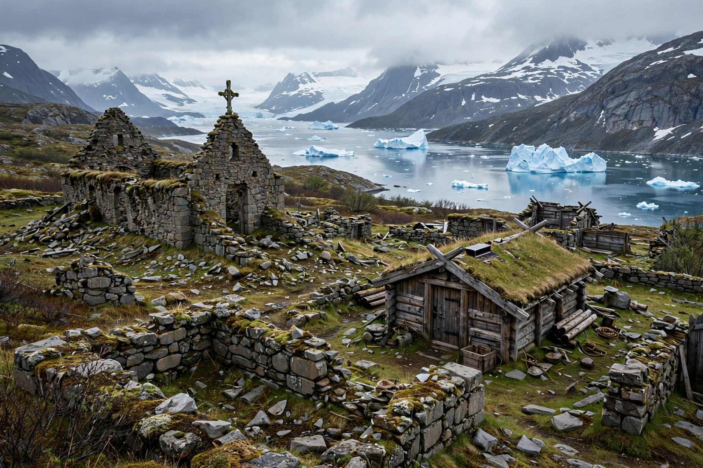

Norse Greenland was settled by Norsemen from Iceland beginning around 985 CE, when Erik the Red, exiled from Iceland, established farms in the fjords of southwestern Greenland. Two main settlements developed: the Eastern Settlement near modern Qaqortoq and the Western Settlement near Nuuk.
Settlers farmed cattle and sheep, hunted walrus and narwhal for ivory exports, built stone churches (including Hvalsey, whose 1408 wedding record is the last written evidence), and accepted Norwegian rule and a bishop at Garðar. The Western Settlement was abandoned by c. 1350 and the Eastern by the late 15th century. Causes debated include climate cooling in the Little Ice Age, soil erosion, falling ivory prices, and relations with the Thule Inuit.